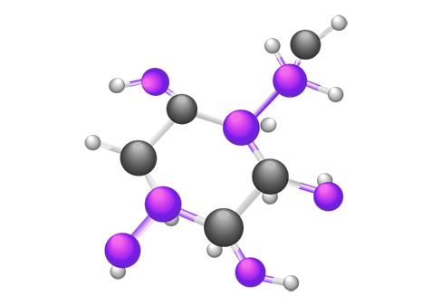
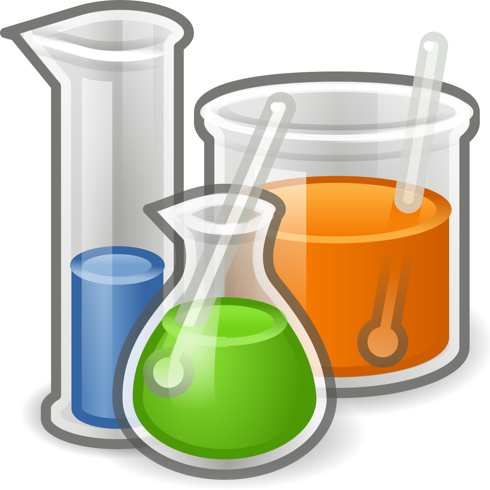

Атом наименьшая частица химического элемента. Он состоит из ядра и электронов вокруг него. Ядро состоит из протонов и нейтронов
Атом - предел химического разложения любого вещества.
Частица , состоящая из двух или более атомов, которая может самостоятельно существовать.
Свойства молекулы зависят от атомов, входящих в её состав, и от характера связей между ними, от молекулярной структуры и от пространственного расположения.
Вещество — это форма материи, обладающая массой.
Химия изучает большей частью вещества, организованные в атомы, молекулы, ионы и радикалы.